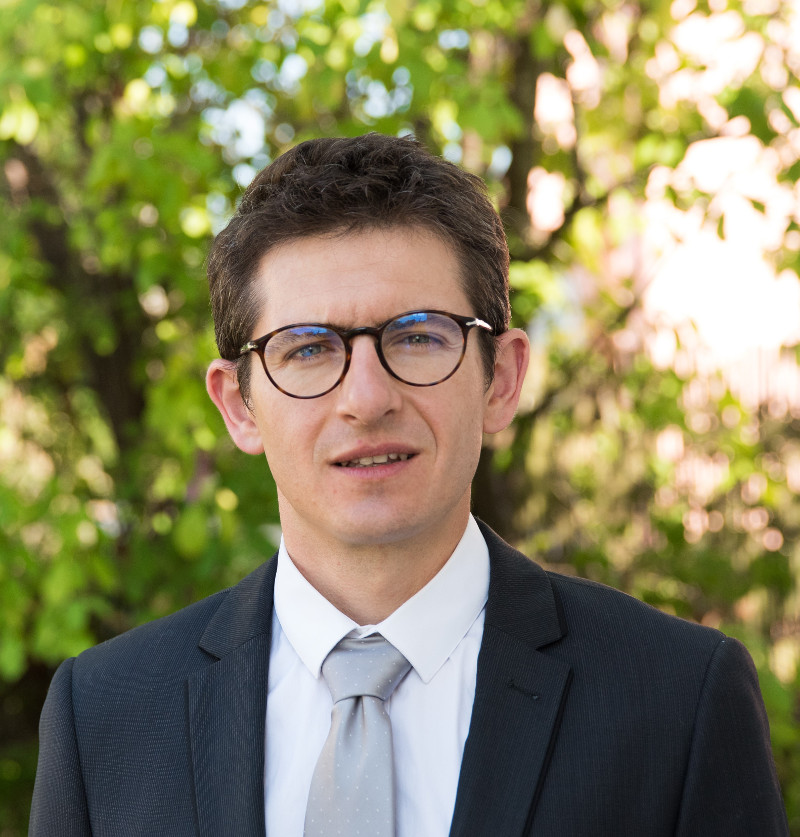
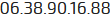

CHEF DE PROJETS CONFIRMÉ/INGÉNIEUR GÉNÉRALISTE ENIT

34 Rue du Buisson de Joyeuse 33230 Coutras

Expériences professionnelles
2013 - Aujourd'hui
Chef de projet - CRYOSTAR AUTOMATION groupe LINDE (Capdenac-Gare - 12)
Gérer les projets de stations de remplissage clé en main de cylindres (application industrielle et médicale) et de véhicules GNL / GNC
Coordonner l’équipe projet de la prise de commande jusqu’à la fin de la période de garantie des équipements (phase de commissioning incluse)
Suivre les coûts, les délais et la qualité
Piloter les partenaires des projets en Consortium
Gérer les avenants au contrat
Assurer l’interface Client / Equipe projet & services Support
Livraison et démarrage des équipements pour 23 stations de remplissage de cylindres en Europe, Algérie, Afrique du Sud & Australie et 7 stations de véhicules GNL / GNC en Europe. Montant total 10.2 M€
2012 - 2013
Ingénieur des Ventes Produits Business Unit « Distribution » Europe du Sud - CRYOSTAR groupe LINDE (Hésingue - 68)
Commercialiser des pompes cryogéniques utilisées dans le domaine du gaz industriel et du gaz naturel
Elaborer, négocier et suivre les offres jusqu’au passage de commande
Piloter le Distributeur (Espagnol) et Agent (Turque) de la zone
Classifier les prospects de la zone et identifier leur potentiel
Participer à la création et l’amélioration des outils
Prise de commande à hauteur de 765 k€ en 2012 et 790 k€ en 2013
Traiter et suivre les commandes projets de robinets papillon et robinets cryogéniques
Assurer la relation clients / fournisseurs
Coordonner l'action des services Support
Rédiger la documentation de référence (spécifications d'essais et dossier technique)
Suivi des 2 affaires d’exception Ras Laffan au Qatar pour 12 M€ & 20 M€ dans un contexte multiculturel : interlocuteurs Indiens, Egyptiens, Espagnols, Allemands et Français
2006 (stage 5 mois)
Ingénieur Bureau d'Etudes - DELTAWATT (Jaunay-Clan - 86)
Optimiser des outils et méthodes utilisés en audits énergétiques
Rédaction du cahier des charges pour programmation logiciel Delta Conso 2.0
Réalisation d’un diagnostic sur un bâtiment public
2005 (stage 5 mois)
Ingénieur Bureau d'Etudes - Manufacturing Engineering Centre (Cardiff - Pays de Galles)
Analyser le cycle de vie d’un micro produit
Identification d’opportunités visant à réduire les pertes tout au long du cycle de vie
Formations
2001 - 2006
Ingénieur généraliste (cycles préparatoire et ingénieur sur cinq ans). Option « Affaires Internationales » - Ecole Nationale d'Ingénrieurs de Tarbes